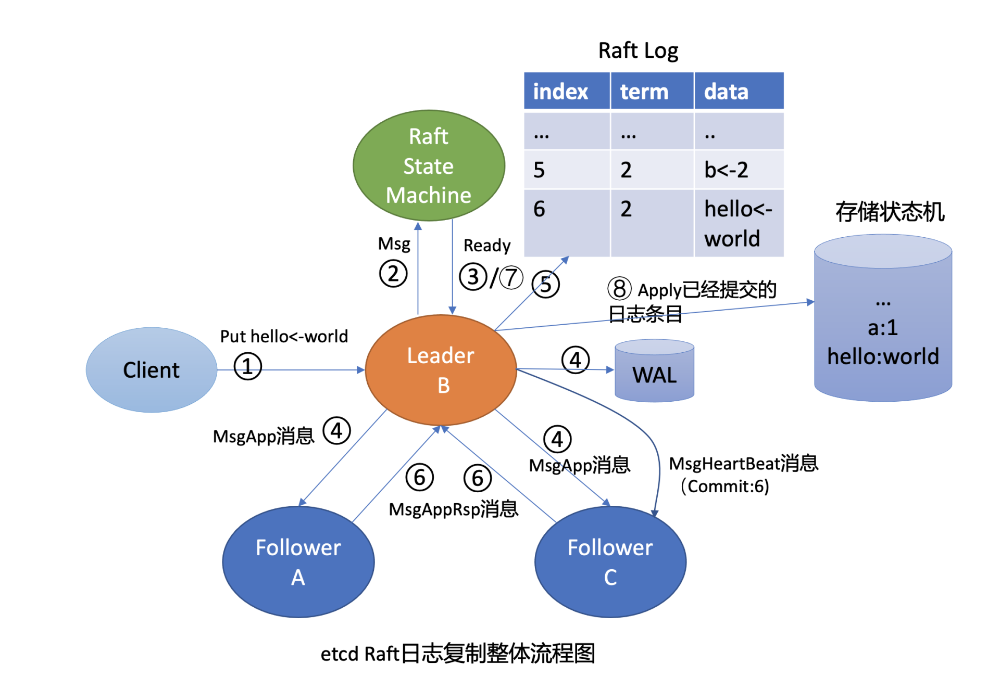
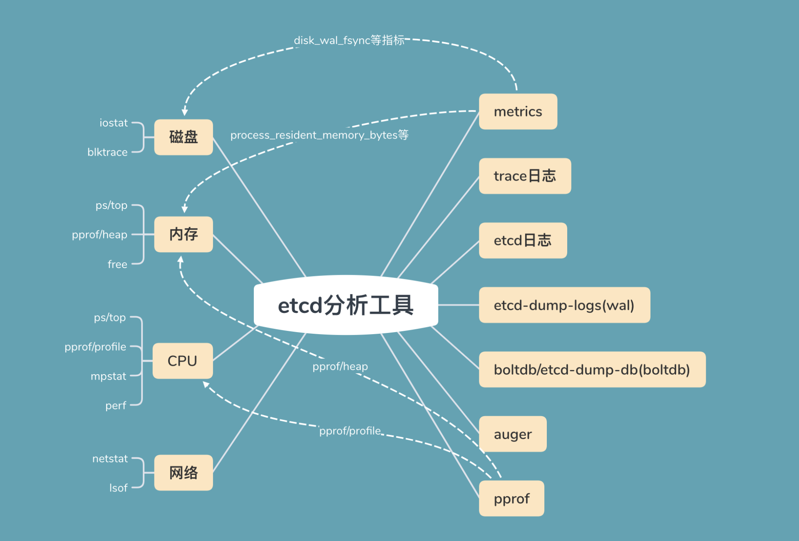
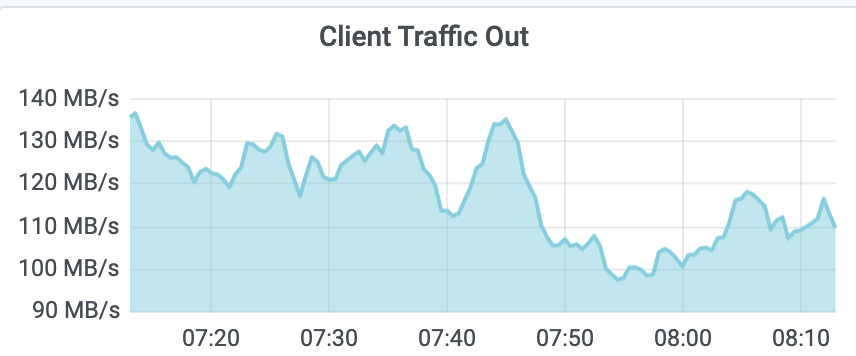
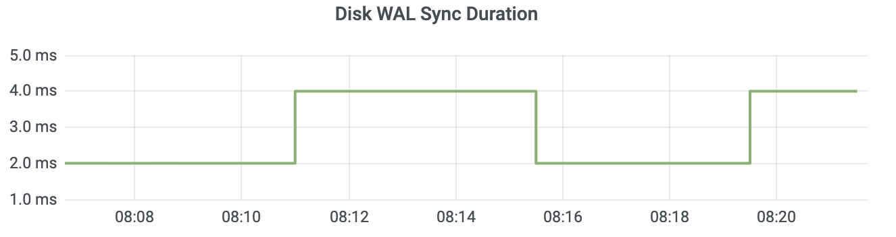
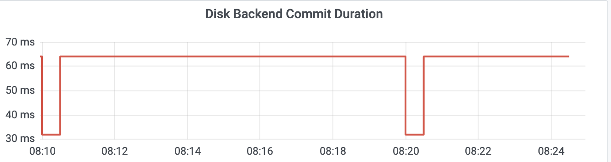
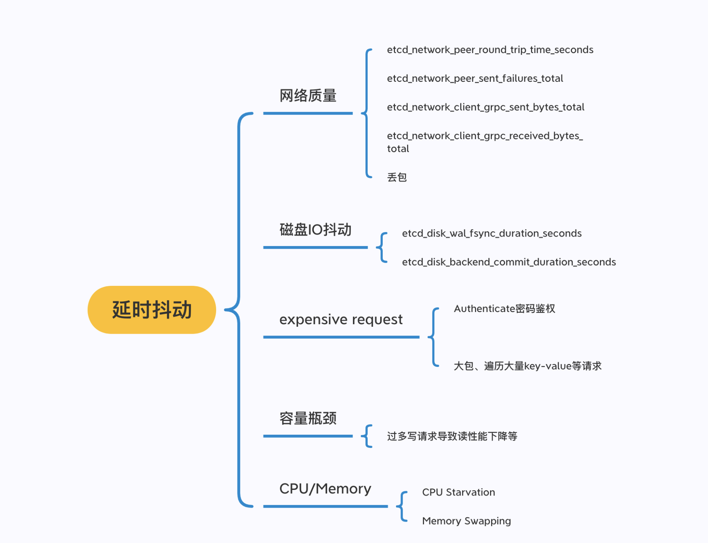

- 00 开篇词 为什么你要学习etcd_.md.html
- 01 etcd的前世今生：为什么Kubernetes使用etcd？.md.html
- 02 基础架构：etcd一个读请求是如何执行的？.md.html
- 03 基础架构：etcd一个写请求是如何执行的？.md.html
- 04 Raft协议：etcd如何实现高可用、数据强一致的？.md.html
- 05 鉴权：如何保护你的数据安全？.md.html
- 06 租约：如何检测你的客户端存活？.md.html
- 07 MVCC：如何实现多版本并发控制？.md.html
- 08 Watch：如何高效获取数据变化通知？.md.html
- 09 事务：如何安全地实现多key操作？.md.html
- 10 boltdb：如何持久化存储你的key-value数据？.md.html
- 11 压缩：如何回收旧版本数据？.md.html
- 12 一致性：为什么基于Raft实现的etcd还会出现数据不一致？.md.html
- 13 db大小：为什么etcd社区建议db大小不超过8G？.md.html
- 14 延时：为什么你的etcd请求会出现超时？.md.html
- 15 内存：为什么你的etcd内存占用那么高？.md.html
- 16 性能及稳定性（上）：如何优化及扩展etcd性能？.md.html
- 17 性能及稳定性（下）：如何优化及扩展etcd性能_.md.html
- 18 实战：如何基于Raft从0到1构建一个支持多存储引擎分布式KV服务？.md.html
- 19 Kubernetes基础应用：创建一个Pod背后etcd发生了什么？.md.html
- 20 Kubernetes高级应用：如何优化业务场景使etcd能支撑上万节点集群？.md.html
- 21 分布式锁：为什么基于etcd实现分布式锁比Redis锁更安全？.md.html
- 22 配置及服务发现：解析etcd在API Gateway开源项目中应用.md.html
- 23 选型：etcd_ZooKeeper_Consul等我们该如何选择？.md.html
- 24 运维：如何构建高可靠的etcd集群运维体系？.md.html
- 特别放送 成员变更：为什么集群看起来正常，移除节点却会失败呢？.md.html
- 结束语 搞懂etcd，掌握通往分布式存储系统之门的钥匙.md.html
- 捐赠
14 延时：为什么你的etcd请求会出现超时？
你好，我是唐聪。
在使用etcd的过程中，你是否被日志中的”apply request took too long”和“etcdserver: request timed out”等高延时现象困扰过？它们是由什么原因导致的呢？我们应该如何来分析这些问题？
这就是我今天要和你分享的主题：etcd延时。希望通过这节课，帮助你掌握etcd延时抖动、超时背后的常见原因和分析方法，当你遇到类似问题时，能独立定位、解决。同时，帮助你在实际业务场景中，合理配置集群，遵循最佳实践，尽量减少expensive request，避免etcd请求出现超时。
分析思路及工具
首先，当我们面对一个高延时的请求案例后，如何梳理问题定位思路呢？
知彼知己，方能百战不殆，定位问题也是类似。首先我们得弄清楚产生问题的原理、流程，在02、03、04中我已为你介绍过读写请求的核心链路。其次是熟练掌握相关工具，借助它们，可以帮助我们快速攻破疑难杂症。
这里我们再回顾下03中介绍的，Leader收到一个写请求，将一个日志条目复制到集群多数节点并应用到存储状态机的流程（如下图所示），通过此图我们看看写流程上哪些地方可能会导致请求超时呢？

首先是流程四，一方面，Leader需要并行将消息通过网络发送给各Follower节点，依赖网络性能。另一方面，Leader需持久化日志条目到WAL，依赖磁盘I/O顺序写入性能。
其次是流程八，应用日志条目到存储状态机时，etcd后端key-value存储引擎是boltdb。正如我们10所介绍的，它是一个基于B+ tree实现的存储引擎，当你写入数据，提交事务时，它会将dirty page持久化到磁盘中。在这过程中boltdb会产生磁盘随机I/O写入，因此事务提交性能依赖磁盘I/O随机写入性能。
最后，在整个写流程处理过程中，etcd节点的CPU、内存、网络带宽资源应充足，否则肯定也会影响性能。
初步了解完可能导致延时抖动的瓶颈处之后，我给你总结了etcd问题定位过程中常用的工具，你可以参考下面这幅图。

图的左边是读写请求链路中可能出现瓶颈或异常的点，比如上面流程分析中提到的磁盘、内存、CPU、网络资源。
图的右边是常用的工具，分别是metrics、trace日志、etcd其他日志、WAL及boltdb分析工具等。
接下来，我基于读写请求的核心链路和其可能出现的瓶颈点，结合相关的工具，为你深入分析etcd延时抖动的定位方法和原因。
网络
首先我们来看看流程图中第一个提到可能瓶颈点，网络模块。
在etcd中，各个节点之间需要通过2380端口相互通信，以完成Leader选举、日志同步等功能，因此底层网络质量（吞吐量、延时、稳定性）对上层etcd服务的性能有显著影响。
网络资源出现异常的常见表现是连接闪断、延时抖动、丢包等。那么我们要如何定位网络异常导致的延时抖动呢？
一方面，我们可以使用常规的ping/traceroute/mtr、ethtool、ifconfig/ip、netstat、tcpdump网络分析工具等命令，测试网络的连通性、延时，查看网卡的速率是否存在丢包等错误，确认etcd进程的连接状态及数量是否合理，抓取etcd报文分析等。
另一方面，etcd应用层提供了节点之间网络统计的metrics指标，分别如下：
- etcd_network_active_peer，表示peer之间活跃的连接数；
- etcd_network_peer_round_trip_time_seconds，表示peer之间RTT延时；
- etcd_network_peer_sent_failures_total，表示发送给peer的失败消息数；
- etcd_network_client_grpc_sent_bytes_total，表示server发送给client的总字节数，通过这个指标我们可以监控etcd出流量；
- etcd_network_client_grpc_received_bytes_total，表示server收到client发送的总字节数，通过这个指标可以监控etcd入流量。
client入流量监控如下图所示：

client出流量如下图监控所示。 从图中你可以看到，峰值接近140MB/s(1.12Gbps)，这是非常不合理的，说明业务中肯定有大量expensive read request操作。若etcd集群读写请求开始出现超时，你可以用ifconfig等命令查看是否出现丢包等错误。

etcd metrics指标名由namespace和subsystem、name组成。namespace为etcd， subsystem是模块名（比如network、name具体的指标名）。你可以在Prometheus里搜索etcd_network找到所有network相关的metrics指标名。
下面是一个集群中某节点异常后的metrics指标：
etcd_network_active_peers{Local="fd422379fda50e48"，Remote="8211f1d0f64f3269"} 1
etcd_network_active_peers{Local="fd422379fda50e48"，Remote="91bc3c398fb3c146"} 0
etcd_network_peer_sent_failures_total{To="91bc3c398fb3c146"} 47774
etcd_network_client_grpc_sent_bytes_total 513207
从以上metrics中，你可以看到91bc3c398fb3c146节点出现了异常。在etcd场景中，网络质量导致etcd性能下降主要源自两个方面：
一方面，expensive request中的大包查询会使网卡出现瓶颈，产生丢包等错误，从而导致etcd吞吐量下降、高延时。expensive request导致网卡丢包，出现超时，这在etcd中是非常典型且易发生的问题，它主要是因为业务没有遵循最佳实践，查询了大量key-value。
另一方面，在跨故障域部署的时候，故障域可能是可用区、城市。故障域越大，容灾级别越高，但各个节点之间的RTT越高，请求的延时更高。
磁盘I/O
了解完网络问题的定位方法和导致网络性能下降的因素后，我们再看看最核心的磁盘I/O。
正如我在开头的Raft日志复制整体流程图中和你介绍的，在etcd中无论是Raft日志持久化还是boltdb事务提交，都依赖于磁盘I/O的性能。
当etcd请求延时出现波动时，我们往往首先关注disk相关指标是否正常。我们可以通过etcd磁盘相关的metrics(etcd_disk_wal_fsync_duration_seconds和etcd_disk_backend_commit_duration_seconds)来观测应用层数据写入磁盘的性能。
etcd_disk_wal_fsync_duration_seconds（简称disk_wal_fsync）表示WAL日志持久化的fsync系统调用延时数据。一般本地SSD盘P99延时在10ms内，如下图所示。

etcd_disk_backend_commit_duration_seconds（简称disk_backend_commit）表示后端boltdb事务提交的延时，一般P99在120ms内。

这里你需要注意的是，一般监控显示的磁盘延时都是P99，但实际上etcd对磁盘特别敏感，一次磁盘I/O波动就可能产生Leader切换。如果你遇到集群Leader出现切换、请求超时，但是磁盘指标监控显示正常，你可以查看P100确认下是不是由于磁盘I/O波动导致的。
同时etcd的WAL模块在fdatasync操作超过1秒时，也会在etcd中打印如下的日志，你可以结合日志进一步定位。
if took > warnSyncDuration {
if w.lg != nil {
w.lg.Warn(
"slow fdatasync",
zap.Duration("took", took),
zap.Duration("expected-duration", warnSyncDuration),
)
} else {
plog.Warningf("sync duration of %v, expected less than %v", took, warnSyncDuration)
}
}
当disk_wal_fsync指标异常的时候，一般是底层硬件出现瓶颈或异常导致。当然也有可能是CPU高负载、cgroup blkio限制导致的，我们具体应该如何区分呢？
你可以通过iostat、blktrace工具分析瓶颈是在应用层还是内核层、硬件层。其中blktrace是blkio层的磁盘I/O分析利器，它可记录IO进入通用块层、IO请求生成插入请求队列、IO请求分发到设备驱动、设备驱动处理完成这一系列操作的时间，帮助你发现磁盘I/O瓶颈发生的阶段。
当disk_backend_commit指标的异常时候，说明事务提交过程中的B+ tree树重平衡、分裂、持久化dirty page、持久化meta page等操作耗费了大量时间。
disk_backend_commit指标异常，能说明是磁盘I/O发生了异常吗？
若disk_backend_commit较高、disk_wal_fsync却正常，说明瓶颈可能并非来自磁盘I/O性能，也许是B+ tree的重平衡、分裂过程中的较高时间复杂度逻辑操作导致。比如etcd目前所有stable版本（etcd 3.2到3.4），从freelist中申请和回收若干连续空闲页的时间复杂度是O(N)，当db文件较大、空闲页碎片化分布的时候，则可能导致事务提交高延时。
那如何区分事务提交过程中各个阶段的耗时呢？
etcd还提供了disk_backend_commit_rebalance_duration和
disk_backend_commit_spill_duration两个metrics，分别表示事务提交过程中B+ tree的重平衡和分裂操作耗时分布区间。
最后，你需要注意disk_wal_fsync记录的是WAL文件顺序写入的持久化时间，disk_backend_commit记录的是整个事务提交的耗时。后者涉及的磁盘I/O是随机的，为了保证你etcd集群的稳定性，建议使用SSD磁盘以确保事务提交的稳定性。
expensive request
若磁盘和网络指标都很正常，那么延时高还有可能是什么原因引起的呢？
从02介绍的读请求链路我们可知，一个读写请求经过Raft模块处理后，最终会走到MVCC模块。那么在MVCC模块会有哪些场景导致延时抖动呢？时间耗在哪个处理流程上了？
etcd 3.4版本之前，在应用put/txn等请求到状态机的apply和处理读请求range流程时，若一个请求执行超过100ms时，默认会在etcd log中打印一条”apply request took too long”的警告日志。通过此日志我们可以知道集群中apply流程产生了较慢的请求，但是不能确定具体是什么因素导致的。
比如在Kubernetes中，当集群Pod较多的时候，若你频繁执行List Pod，可能会导致etcd出现大量的”apply request took too long”警告日志。
因为对etcd而言，List Pod请求涉及到大量的key查询，会消耗较多的CPU、内存、网络资源，此类expensive request的QPS若较大，则很可能导致OOM、丢包。
当然，除了业务发起的expensive request请求导致延时抖动以外，也有可能是etcd本身的设计实现存在瓶颈。
比如在etcd 3.2和3.3版本写请求完成之前，需要更新MVCC的buffer，进行升级锁操作。然而此时若集群中出现了一个long expensive read request，则会导致写请求执行延时抖动。因为expensive read request事务会一直持有MVCC的buffer读锁，导致写请求事务阻塞在升级锁操作中。
在了解完expensive request对请求延时的影响后，接下来要如何解决请求延时较高问题的定位效率呢？
为了提高请求延时分布的可观测性、延时问题的定位效率，etcd社区在3.4版本后中实现了trace特性，详细记录了一个请求在各个阶段的耗时。若某阶段耗时流程超过默认的100ms，则会打印一条trace日志。
下面是我将trace日志打印的阈值改成1纳秒后读请求执行过程中的trace日志。从日志中你可以看到，trace日志记录了以下阶段耗时：
- agreement among raft nodes before linearized reading，此阶段读请求向Leader发起readIndex查询并等待本地applied index >= Leader的committed index， 但是你无法区分是readIndex慢还是等待本地applied index > Leader的committed index慢。在etcd 3.5中新增了trace，区分了以上阶段；
- get authentication metadata，获取鉴权元数据；
- range keys from in-memory index tree，从内存索引B-tree中查找key列表对应的版本号列表；
- range keys from bolt db，根据版本号列表从boltdb遍历，获得用户的key-value信息；
- filter and sort the key-value pairs，过滤、排序key-value列表；
- assemble the response，聚合结果。
{
"level":"info"，
"ts":"2020-12-16T08:11:43.720+0800"，
"caller":"traceutil/trace.go:145"，
"msg":"trace[789864563] range"，
"detail":"{range_begin:a; range_end:; response_count:1; response_revision:32011; }"，
"duration":"318.774µs"，
"start":"2020-12-16T08:11:43.719+0800"，
"end":"2020-12-16T08:11:43.720+0800"，
"steps":[
"trace[789864563] 'agreement among raft nodes before linearized reading' (duration: 255.227µs)"，
"trace[789864563] 'get authentication metadata' (duration: 2.97µs)"，
"trace[789864563] 'range keys from in-memory index tree' (duration: 44.578µs)"，
"trace[789864563] 'range keys from bolt db' (duration: 8.688µs)"，
"trace[789864563] 'filter and sort the key-value pairs' (duration: 578ns)"，
"trace[789864563] 'assemble the response' (duration: 643ns)"
]
}
那么写请求流程会记录哪些阶段耗时呢？
下面是put写请求的执行trace日志，记录了以下阶段耗时：
- process raft request，写请求提交到Raft模块处理完成耗时；
- get key’s previous created_revision and leaseID，获取key上一个创建版本号及leaseID的耗时；
- marshal mvccpb.KeyValue，序列化KeyValue结构体耗时；
- store kv pair into bolt db，存储kv数据到boltdb的耗时；
- attach lease to kv pair，将lease id关联到kv上所用时间。
{
"level":"info"，
"ts":"2020-12-16T08:25:12.707+0800"，
"caller":"traceutil/trace.go:145"，
"msg":"trace[1402827146] put"，
"detail":"{key:16; req_size:8; response_revision:32030; }"，
"duration":"6.826438ms"，
"start":"2020-12-16T08:25:12.700+0800"，
"end":"2020-12-16T08:25:12.707+0800"，
"steps":[
"trace[1402827146] 'process raft request' (duration: 6.659094ms)"，
"trace[1402827146] 'get key's previous created_revision and leaseID' (duration: 23.498µs)"，
"trace[1402827146] 'marshal mvccpb.KeyValue' (duration: 1.857µs)"，
"trace[1402827146] 'store kv pair into bolt db' (duration: 30.121µs)"，
"trace[1402827146] 'attach lease to kv pair' (duration: 661ns)"
]
}
通过以上介绍的trace特性，你就可以快速定位到高延时读写请求的原因。比如当你向etcd发起了一个涉及到大量key或value较大的expensive request请求的时候，它会产生如下的warn和trace日志。
从以下日志中我们可以看到，此请求查询的vip前缀下所有的kv数据总共是250条，但是涉及的数据包大小有250MB，总耗时约1.85秒，其中从boltdb遍历key消耗了1.63秒。
{
"level":"warn"，
"ts":"2020-12-16T23:02:53.324+0800"，
"caller":"etcdserver/util.go:163"，
"msg":"apply request took too long"，
"took":"1.84796759s"，
"expected-duration":"100ms"，
"prefix":"read-only range "，
"request":"key:"vip" range_end:"viq" "，
"response":"range_response_count:250 size:262150651"
}
{
"level":"info"，
"ts":"2020-12-16T23:02:53.324+0800"，
"caller":"traceutil/trace.go:145"，
"msg":"trace[370341530] range"，
"detail":"{range_begin:vip; range_end:viq; response_count:250; response_revision:32666; }"，
"duration":"1.850335038s"，
"start":"2020-12-16T23:02:51.473+0800"，
"end":"2020-12-16T23:02:53.324+0800"，
"steps":[
"trace[370341530] 'range keys from bolt db' (duration: 1.632336981s)"
]
}
最后，有两个注意事项。
第一，在etcd 3.4中，logger默认为capnslog，trace特性只有在当logger为zap时才开启，因此你需要设置–logger=zap。
第二，trace特性并不能记录所有类型的请求，它目前只覆盖了MVCC模块中的range/put/txn等常用接口。像Authenticate鉴权请求，涉及到大量CPU计算，延时是非常高的，在trace日志中目前没有相关记录。
如果你开启了密码鉴权，在连接数增多、QPS增大后，若突然出现请求超时，如何确定是鉴权还是查询、更新等接口导致的呢？
etcd默认参数并不会采集各个接口的延时数据，我们可以通过设置etcd的启动参数–metrics为extensive来开启，获得每个gRPC接口的延时数据。同时可结合各个gRPC接口的请求数，获得QPS。
如下是某节点的metrics数据，251个Put请求，返回码OK，其中有240个请求在100毫秒内完成。
grpc_server_handled_total{grpc_code="OK"，
grpc_method="Put"，grpc_service="etcdserverpb.KV"，
grpc_type="unary"} 251
grpc_server_handling_seconds_bucket{grpc_method="Put"，grpc_service="etcdserverpb.KV"，grpc_type="unary"，le="0.005"} 0
grpc_server_handling_seconds_bucket{grpc_method="Put"，grpc_service="etcdserverpb.KV"，grpc_type="unary"，le="0.01"} 1
grpc_server_handling_seconds_bucket{grpc_method="Put"，grpc_service="etcdserverpb.KV"，grpc_type="unary"，le="0.025"} 51
grpc_server_handling_seconds_bucket{grpc_method="Put"，grpc_service="etcdserverpb.KV"，grpc_type="unary"，le="0.05"} 204
grpc_server_handling_seconds_bucket{grpc_method="Put"，grpc_service="etcdserverpb.KV"，grpc_type="unary"，le="0.1"} 240
集群容量、节点CPU/Memory瓶颈
介绍完网络、磁盘I/O、expensive request导致etcd请求延时较高的原因和分析方法后，我们再看看容量和节点资源瓶颈是如何导致高延时请求产生的。
若网络、磁盘I/O正常，也无expensive request，那此时高延时请求是怎么产生的呢？它的trace日志会输出怎样的耗时结果？
下面是一个社区用户反馈的一个读接口高延时案例的两条trace日志。从第一条日志中我们可以知道瓶颈在于线性读的准备步骤，readIndex和wait applied index。
那么是其中具体哪个步骤导致的高延时呢？通过在etcd 3.5版本中细化此流程，我们获得了第二条日志，发现瓶颈在于等待applied index >= Leader的committed index。
{
"level": "info"，
"ts": "2020-08-12T08:24:56.181Z"，
"caller": "traceutil/trace.go:145"，
"msg": "trace[677217921] range"，
"detail": "{range_begin:/...redacted...; range_end:; response_count:1; response_revision:2725080604; }"，
"duration": "1.553047811s"，
"start": "2020-08-12T08:24:54.628Z"，
"end": "2020-08-12T08:24:56.181Z"，
"steps": [
"trace[677217921] 'agreement among raft nodes before linearized reading' (duration: 1.534322015s)"
]
}
{
"level": "info"，
"ts": "2020-09-22T12:54:01.021Z"，
"caller": "traceutil/trace.go:152"，
"msg": "trace[2138445431] linearizableReadLoop"，
"detail": ""，
"duration": "855.447896ms"，
"start": "2020-09-22T12:54:00.166Z"，
"end": "2020-09-22T12:54:01.021Z"，
"steps": [
"trace[2138445431] read index received (duration: 824.408µs)"，
"trace[2138445431] applied index is now lower than readState.Index (duration: 854.622058ms)"
]
}
为什么会发生这样的现象呢?
首先你可以通过etcd_server_slow_apply_total指标，观查其值快速增长的时间点与高延时请求产生的日志时间点是否吻合。
其次检查是否存在大量写请求。线性读需确保本节点数据与Leader数据一样新， 若本节点的数据与Leader差异较大，本节点追赶Leader数据过程会花费一定时间，最终导致高延时的线性读请求产生。
etcd适合读多写少的业务场景，若写请求较大，很容易出现容量瓶颈，导致高延时的读写请求产生。
最后通过ps/top/mpstat/perf等CPU、Memory性能分析工具，检查etcd节点是否存在CPU、Memory瓶颈。goroutine饥饿、内存不足都会导致高延时请求产生，若确定CPU和Memory存在异常，你可以通过开启debug模式，通过pprof分析CPU和内存瓶颈点。
小结
最后小结下我们今天的内容，我按照前面介绍的读写请求原理、以及丰富的实战经验，给你整理了可能导致延时抖动的常见原因。
如下图所示，我从以下几个方面给你介绍了会导致请求延时上升的原因：
- 网络质量，如节点之间RTT延时、网卡带宽满，出现丢包；
- 磁盘I/O抖动，会导致WAL日志持久化、boltdb事务提交出现抖动，Leader出现切换等；
- expensive request，比如大包请求、涉及到大量key遍历、Authenticate密码鉴权等操作；
- 容量瓶颈，太多写请求导致线性读请求性能下降等；
- 节点配置，CPU繁忙导致请求处理延时、内存不够导致swap等。

并在分析这些案例的过程中，给你介绍了etcd问题核心工具：metrics、etcd log、trace日志、blktrace、pprof等。
希望通过今天的内容，能帮助你从容应对etcd延时抖动。
思考题
在使用etcd过程中，你遇到过哪些高延时的请求案例呢？你是如何解决的呢？
感谢你的阅读，如果你认为这节课的内容有收获，也欢迎把它分享给你的朋友，谢谢。
© 2019 - 2023 Liangliang Lee. Powered by gin and hexo-theme-book.